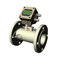

超声波流量计(热量表):

产品概述:
超声波热量计采用“时差”原理，利用超声波脉冲在通过流体顺逆两方向上传播速度之差，来求充满封闭圆管内液体流量的仪表。以独特的技术对信号进行智能跟踪及纠错，雷诺数和温度自动补偿，在电路设计上采用多微处理器及超大规模集成电路，硬件元件参数无关化设计，无需调整即能确保每一台流量计具有完全相同的性能，充分地考虑了工业现场复杂情况，从而保证了仪表长期可靠精度的测量。当超声波波束在液体中传播时，液体的流动将使传播时间产生微笑变化，其传播时间的变化成正比于液体的流速，零流量时，两个传感器发射和接受声波所需的时间 完全相同（唯一可实际测量零流量的技术）；介质流动时，逆流方向的声波传输时间大于水流方向的声波传输时间。
关系表达式:
V=MD/sin2θ*ΔT/Tup*Tdown
V：介质流速
θ：声速与液体流动方向的夹角
M：声束在液体的直线传播次数
D：管道内径
Tup：声束在正上方的传播时间
Tdown：声束在逆方向上的传播时间
ΔT：Tup-Tdown
产品特点:
1、可做非接触式测量；
2、无流动阻挠测量,无压力损失；
3、可测量非导电性液体；
4、量程比宽，用途广泛；
5、多种功能主机，携带方便。
技术参数:
| 主机 | 2x20点阵式背光型液晶显示器 |
| 打印机输出选用24列字符微型热敏打印机4x4+2式轻触键盘 | |
| 工作温度：-20-60℃ | |
| 数据接口RS-232 | |
| 测量介质 | 水，海水，工业污水，酸碱液，各种油类等能传导声波的液体 |
| 流量范围 | 0-±30m/s |
| 测量精度 | 优于±1% |
| 工作电源 | 镍氢电池壳持续工作20小时以上或220VAC，允差±15% |
| 功耗 | 2W |
| 充电 | 采用智能充电方式，直接接入AC220V，充足后自动停止，显示绿灯 |
| 重量 | 净重2.0（主机） |
| 备注 | 配备高强度防护箱，可在野外，井下等恶劣环境中使用 |
| 线性度 | 0.5% |
| 重复性 | 0.2% |
| 准确性 | 示值的+1%，流速>0.2m/s |
| 相应时间 | 0-999秒，使用者任选 |
| 流量范围 | +32m/s |
| 测量口径 | 15-6000mm |
| 测量单位 | 米、英尺、立方米 |
| 累计器 | 7位正、负、净累计器 |
| 液体种类 | 各种能够传导声波的单一均匀的液体 |
| 安全性 | 设置值的锁定，更改数据需要解锁 |
| 显示 | 4x8中文或4x16英文 |
| 通讯接口 | RS-232，波特率75-57600，同时兼容富士超声波流量计，也应用户的要求兼容其它产品 |
| 传感器 | 标准M1型，另有其它4中可供选择 |
| 传感器电缆 | 标准为5mx2，也可加长为10mx2 |
| 电源 | 3节AAA内置Ni-H电池，每次充满电可持续工作12小时，AC100-240V的适配器 |
| 数据记录 | 内置数据记录仪，可记录2000行数据 |
| 手动累计器 | 7位，按键即可开始用于标准 |
| 外壳材料 | 阻燃ABS |
| 外壳尺寸 | 200x90x30mm |
| 主机重量 | 500g（1.2Ibs）包括电池 |
测量范围:
| 产品型号 | 测量管道范围（mm） | ||||
| 小型外贴传感器 | DN15-10 | DN15-10 | ———— | ———— | |
| 中型外贴传感器 | DN50-1000 | DN50-1000 | ———— | ———— | |
| 大型外贴传感器 | DN300-6000 | DN300-6000 | ———— | ———— | |
| 高温小型传感器 | DN15-100 | DN15-100 | ———— | ———— | |
| 高温中型传感器 | DN50-1000 | DN50-1000 | ———— | ———— | |
| 超声波测量仪 | 1.2-225.0 | 1.2-225.0 | ———— | ———— | |
| 外夹式 | （小型） | ———— | ———— | DN15-10 | DN15-10 |
| （中型） | ———— | ———— | DN50-1000 | DN50-1000 | |
| （大型） | ———— | ———— | DN300-6000 | DN300-6000 | |
| 高温外夹式 | （小型） | ———— | ———— | DN15-10 | DN15-10 |
| （中型） | ———— | ———— | DN300-1000 | DN300-1000 | |
| 插入式 | （标准插入） | ———— | ———— | DN80-6000 | DN80-6000 |
| TLC-2（加长插入） | ———— | ———— | |||
| 管段式 | TS-1（小型) | ———— | ———— | DN15-1000 | DN15-1000 |
产品分类:
| 产品图片 |  |  |
||
| 主机规格 | 便携式 | 手持式 | 固定一体式 | 固定分体式 |
| 信号输出 | 无 | 无 | 4～20mA | 4～20mA |
| 供电电源 | 220VAC、锂电池 | 锂电池 | 220VAC或+24VDC | 220VAC或+24VDC |
| 精度等级 | 1级 | 1级 | 1级 | 1级 |
| 显示器 | 标配 | 标配 | 标配 | 标配 |
| 累计器 | 正、负、净累计器 | 正、负、净累计器 | 正、负、净累计器 | 正、负、净累计器 |
| 中英文菜单 | 有 | 有 | 有 | 有 |
| 测量单位 | 多种可选 | 多种可选 | 多种可选 | 多种可选 |
| 打印功能 | 标配 | 无 | 无 | 无 |
| 通讯接口 | 无 | 可选RS232 | 可选RS485 | 可选RS485 |
| 选配传感器 | 外贴式/插入式 | 外贴式/插入式 | 外贴式/插入式/管段式 | 外贴式/插入式/管段式 |
| 最低可测流速 | 0.2米/秒 | 0.2米/秒 | 0.2米/秒 | 0.2米/秒 |
| 最高可测流速 | 32米/秒 | 32米/秒 | 32米/秒 | 32米/秒 |
| 仪表通经 | DN15～DN1500 | DN15～DN1500 | DN15～DN1000 | DN15～DN2000 |
| 环境温度 | -30℃～60℃ | -30℃～60℃ | -30℃～60℃ | -30℃～70℃ |